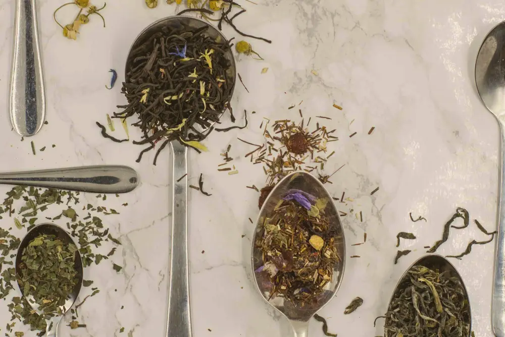
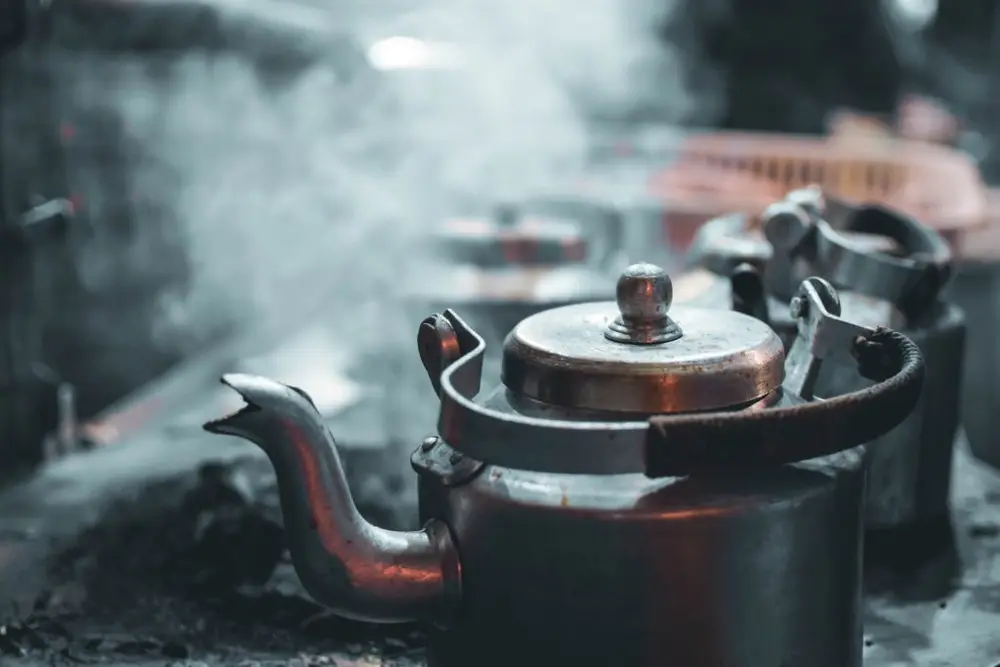
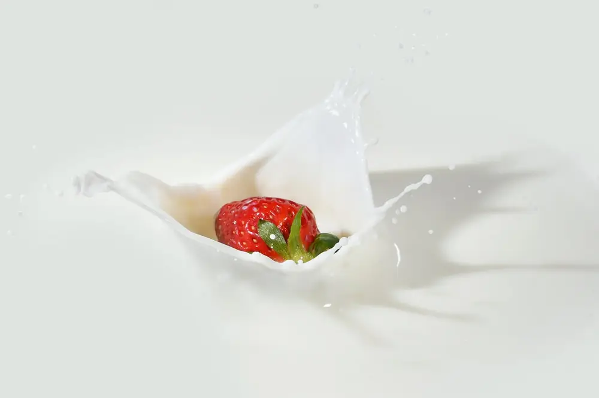
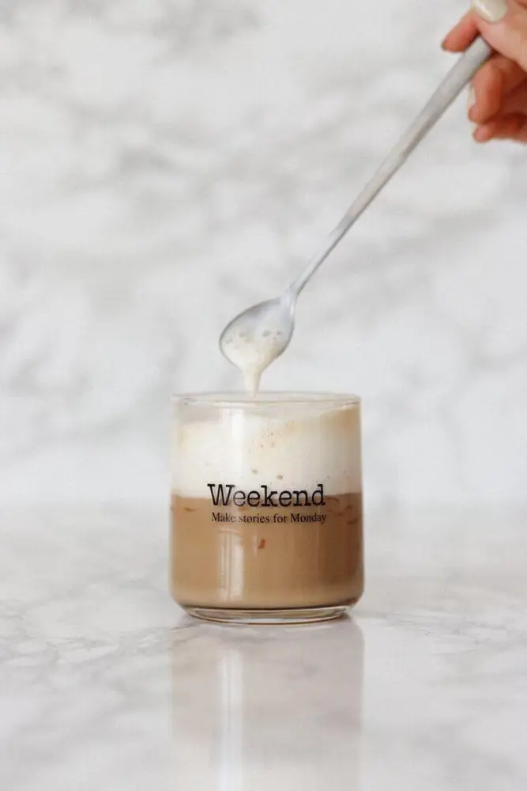
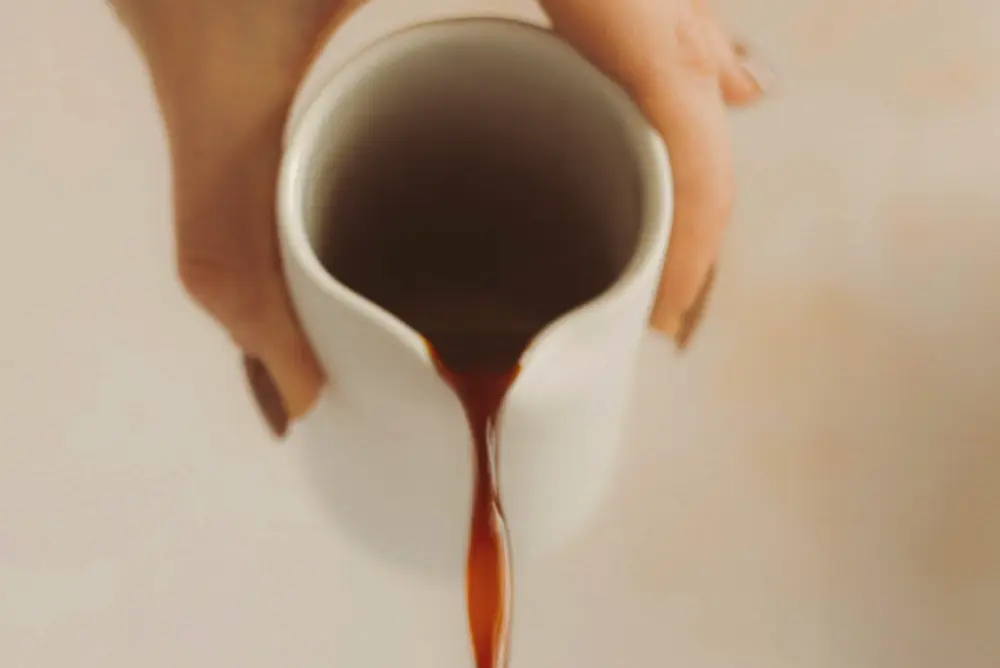
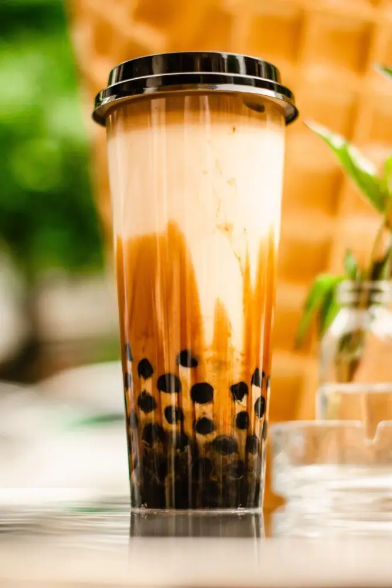
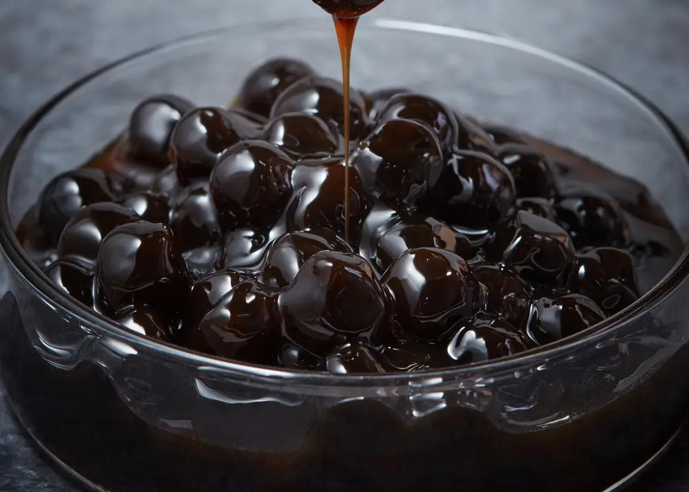

文章 / 飲品配方與資訊
How to make the perfect bubble tea: ingredients roundup!
這篇是英文原文，尚未完成繁體中文翻譯。中文選單與相關商品連結不會切回英文介面。

查看英文原文（尚未翻譯）
One of the best things about bubble tea is the sheer amount of creativity you can do with it – many bubble tea shops have enough options to make Starbucks blush, and you can practically put anything under the sun in a cup of boba tea.
However, before you can go wild with your ideas, you need to master the basics first. Here’s a quick rundown of the fundamentals of bubble tea, which any boba barista worth their salt needs to learn about!

Tea
Since this is bubble tea, it’s only natural to start with the tea base! From milk teas and fruit teas to more exotic combinations, a good tea brew is what ties everything together.
While there are drinks without a single drop of tea in them, for everything else this is where you need to get right first!
Common types of teas in bubble tea:
Black tea
With a stronger, richer flavour compared with other tea blends, black tea is what gives milk teas its classic taste!
The two most common blends of black tea are Ceylon from Sri Lanka, and Assam from India. Compared to Ceylon, Assam tea boasts a more robust, almost malty flavour, perfect for a strong hearty milk tea. Meanwhile Ceylon features a lighter, more citrusy note, which pairs well with various fruits!
Aside from the above two blends, some shops also feature other varieties such as Earl Grey (with its tell-tale bergamot aroma), Darjeeling (adding a subtle sweetness) or teas from Taiwan itself!
Green/White tea
Unlike the other two main types, green/white tea go through less processing and less oxidization. The result? A much lighter brew, both in taste and in appearance.
Here you can find a sweeter, more aromatic, almost fruity flavour profile. Want a light tea to pair with peach, mango and other fruits? This is your choice!
Another common blend used is matcha. Since the tea leaves are grown in partial shade, it retains more of its bright green colour and features a richer flavour compared to green tea.
Oolong tea
Oolong tea is more or less the middle ground between black tea and green/white tea. Depending on the amount of oxidization and processing methods, the flavour profiles can vary widely.
In China where the tea originates, Fujian and Guangdong are the main producers. Fujian boasts some of the most famous blends, including Da Hong Pao and Tie Guanyin. Meanwhile, Guangdong features Dancong, which likens its tastes to the fragrances of flowers and fruits.
Taiwan is also an important producer of oolong tea, its many mountains and valleys being the perfect place to grow tea leaves. Different regions, altitudes and seasons give rise to different blends!
How do you brew it?
If you were at home, you’d probably just toss in a tea bag, add some hot water and be done with it. However, things work differently in a tea shop.
Many caterers use a tea base: a strong, concentrated tea brewed in large amounts. To do this:

- Heat water until boiling, then remove water from heat.
- Add tea leaves to water, stir gently until tea leaves are soaked.
- Brew for 9-30 minutes depending on the tea blend. For the 1st half of the brewing process, keep stirring so that tea leaves remain in water
- After brewing, remove tea leaves and place tea into tea container to cool down to around 55-60°C.
- Once your tea base is done, simply dilute the tea with ice cubes before use.
To make things easier, you can use an automated tea brewer, which lets you set the temperature and brewing times in advance. No stove-watching needed!
Meanwhile, some opt for brewing the tea one cup at a time using a specialized blender. This blender quickly extracts the tea from the teabag, while preventing any residue from being left in. That way you’ll still get a fresh brew each time, but without the hassle!

Milk
Another no-brainer, a splash of milk is what brings creaminess and a savoury kick to a good cup of milk tea. For drinks such as taro milk tea, brown sugar boba milk and matcha lattes, the quality of your milk can make or break the drink.
Milks to use in bubble tea
Fresh milk
With a rich creamy texture and robust flavour, fresh milk is the most obvious choice for a good cup of boba milk tea.
Depending on the drink you might need other types of milk. For example, Thai milk tea asks for sweetened condensed milk, while Hong Kong style milk tea uses evaporated milk!
Creamers
Aside from being more cost-effective, non-dairy or vegetarian creamers are also the choice for lactose-intolerant drinkers. Enjoy bubble tea, but without the stomach troubles!
Plant-based milks
As more people opt for the vegetarian/vegan lifestyle, many bubble tea shops offer plant-based milks such as almond milk and oat milks.
If you’re allergic to dairy, this is also the choice for you!

How much milk do you need?
This is mostly a matter of preference, though some shops do make a distinction between milk levels.
If you see a drink labelled as “au lait” or “latte” in Taiwan, it often means a drink with at least 50% milk or creamer. On the other hand, a drink labelled as simply “milk tea” probably has only around 30% or so.
Cream tops!
Also known as cream cheese or rock salt cheese, cream tops are another great way to add an extra layer of creaminess to your drink….quite literally!
Simply blend fresh milk with cream to form a thick foam, then ladle onto your drink of choice!


Syrups
Once you’ve got your tea base and milk down, what’s left is the actual flavour! Syrups are the easiest way to add a dash of flavour and colour to your drink. From various fruits and flowery fragrances to chocolate and maple syrup, there’s something for everyone!

Brown sugar
Brown sugar is what gives tapioca pearls its iconic flavour, and is indispensable in Taiwanese bubble tea!
Thanks to the higher mollasses content compared to white sugar, brown sugar boasts a unique smoky, caramel-y flair.
Aside from traditional milk tea, brown sugar boba milk is where this syrup truly shines! Here, a special thicker variant of brown sugar is poured around the inner walls of the cup, creating the drink’s iconic “tiger stripe” pattern.
Fruit syrups
Fancy a fruit tea? Fruit syrups make it easy – Add a tablespoon or two to your drink and voila!
Mango, peach and lychee are often paired with lighter tea brews such as green tea and certain oolong teas. Stronger black tea blends favour something more zesty, such as passion fruit or just good ol’ lemon tea.
Feel free to mix and match for a unique fruity cocktail of flavours!


Toppings
What makes boba tea so fun is the various toppings you can add to it! There’s more to toppings than just tapioca pearls, here’s a brief intro to some toppings you’d come across:
Tapioca pearls
The one and only classic, these pearls have captured the hearts of many thanks to its delightfully chewy texture!
Aside from the classic brown sugar boba pearls, tapioca pearls also come in other colours including white and golden/amber. Want to speed up the cooking process? Try quick cooking tapioca pearls!
Popping boba
Popping boba are tiny, caviar-like spheres filled to the brim with fruit-flavoured syrups, which burst in your mouth when eaten.
Use popping boba to add some playful flair to your drinks, with some additional fruity goodness to boot!
Coconut jelly
Also known as Nata de Coco, coconut jelly is another great colourful choice of toppings.
Aside from adding it to fruit teas, try adding coconut jelly and red beans to coconut milk for some Southeast Asian vibes!
Other toppings
Want something more unique? Try other toppings! Some bubble tea shops add egg pudding or panna cotta to their drinks, while others opt for grass jelly – a traditional Taiwanese dessert with a herbal, minty taste.
Need more help?
And that about wraps it up!
If you need more help with making bubble tea, we’ve got you covered.
Drop us a message and let us know what you need!